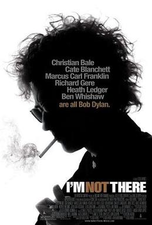

Todd Haynes
2007
135 minutes
TITLE: I'm Not There TEXT PLACEHOLDER 025
As a younger person, you never really got into Bob Dylan.
This is nothing to be proud of, just a statement of fact. You never learned to play a guitar, acoustic or otherwise, either--though you did have several mandolin lessons from an eccentric older guy who followed the Baha'i faith and sold plastic ukuleles. He was unfortunately tragically struck by a car and killed, leaving you without a stringed instrument mentor, so this never went far. For better or worse, you never became the sort of young man (assuming you are a man reading this) who would bust out a guitar and start playing some rudimentary chords while howling out some Bob Dylan song out-of-tune, which formed most of your exposure to Bob Dylan and others in his genre. You were more into punk, where at least angry dissonance was often the point.
You also found Dylan's voice way too nasal and whiny to be pleasant, which is pretty fucking rich coming from some dumb kid who would later go on to love Primus and see them several times in concert.
Being a punk, or at least exposed to punk before Bob Dylan, your first real hint that you might enjoy any of his music was hearing the Red Hot Chili Peppers covering it back when they were still juvenile punks, before they became better known for whiny ballads. This was also one of the gateways to funk for you. You're probably supposed to be ashamed of this but you aren't. You were a pre-teen corn-dog. Those were the days before pubescent music fans were supposed to turn into little sophisticates overnight the moment they stopped listening to Disney Radio Kidsongs and shit like that. Before adults were encouraged to shame adolescents out of things they genuinely enjoy on the internet.
You also had your mind blown when you first saw the video for "Subterranean Homesick Blues" and had the revelation that INXS had ripped it off for another song you greatly enjoyed, "Mediate"--and it even had Allen Ginsberg milling around in the background! Making all of these connections over a few years before Wikipedia existed to lay it all out for you in one entry felt very "earned" and satisfying in a way you rarely get to savor these days.
Seeing Cate Blanchett cross-dressing as a faux-Bob Dylan makes you feel...funny. You're secure enough in your heterosexuality (assuming you are a straight person reading this) to embrace this though. It's still Cate Blanchett under there, take it easy...
You do, however, quickly decide that Cate Blanchett as fake-Dylan yelling at Christ on the cross ("Do your early stuff!") is one of the funniest fucking lines you've heard in any movie. Your infatuation with Cate Blanchett increases, which either affirms or further muddies where you stand on the broad spectrum of human sexuality, depending on your own perceptions of yourself, dear reader...
Time to choose something different: